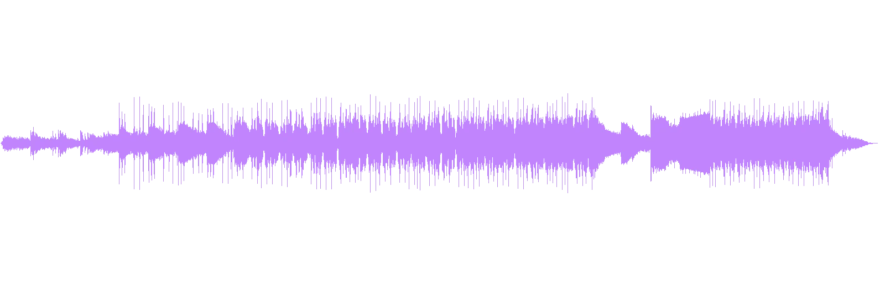
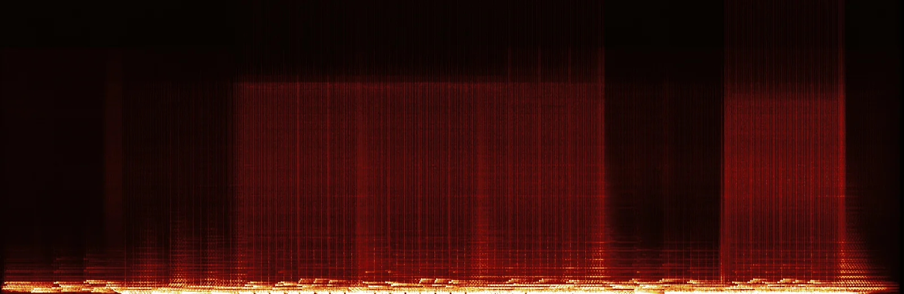
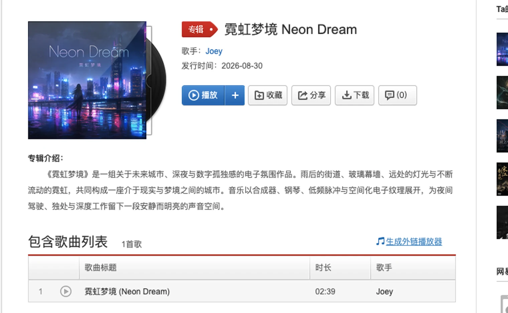

On the evening of August 30, a file named NEON DREAM.wav appeared in my Downloads folder. 48kHz stereo, 159.84 seconds long, generated with Suno. After I uploaded it, NetEase Cloud Music listed the length as 2 minutes 39 seconds. The numbers are tidy. The decisions behind them were not. This track doesn't contain one word of lyrics, and I wanted to slow down and write down every tradeoff that went into making it.
People on the outside imagine AI music as typing in one prompt and waiting for the machine to hand over a song. Once you actually make one, the time-consuming part sits outside the prompt. My first move was to fence off a very narrow world. A future city, late at night, the loneliness that digital life brings. Rain-washed streets, glass curtain walls, lights in the distance that never stop moving. No story, and no room to squeeze in a single line of lyrics. This world could only stand on sound.
Taking the lyrics away made the world heavier instead. With no character to hold on to and no sentence to explain the picture, whether the streets count as rain-washed and whether the lights count as moving all have to be built out of timbre and density. What I could do was run the images in my head through again and again, deleting whatever was extra. Whatever is extra in the imagination ends up extra in the sound. The less that remains, the more each piece weighs.
AI makes sound arrive quickly. The creator still has to narrow the world. The more specific the direction, the more the version left standing feels like a decision.
Deciding how close the city should feel
I left Neon Dream very little sound material, few enough parts to count on one hand. Synths are in charge of laying out the space. Piano offers notes a listener can catch. Low pulses keep the picture moving forward. The remaining electronic textures all retreat to the edges, as if the city itself were still running while the person has stopped. I did this subtraction by ear. Too many textures and the picture turns busy, and busy fights the loneliness of late night; you hear it in a second. Most of what I pushed down were good sounds. They just stole the scene.
The piano is the one thing in this city that resembles a person. The notes are few, and when one appears you can catch it, like someone pausing for a moment to look. Let the piano multiply and the track tips toward sentimental pop. The city is still there, but the person has started singing. I kept it very spare. Its job is to be caught, not to sing.
The album description lists three scenes: night driving, solitude, deep work. Before that line went in, I listened through the track once for each of them. Night driving wants a sense of direction, so the rhythm has to hold steady. Solitude can live with empty space, but fill in too much space and the person behind the wheel drifts off. During deep work, the music can't keep reaching out to grab attention. The three needs can't convene, and each one has its case. I went back and forth between versions, switching and listening, and what survived came down to two things: a steady low pulse, and a brightness that could sit in the background for a long stretch. The brighter version is the one I gave up. It was more complete, more like a proper piece of music, and it had started stealing the show. The loneliness got squeezed flat, and the city was no longer a city at deep night.

The waveform can only tell me how the energy is distributed; how it feels still comes back to the ears. But with the whole track laid out, I could confirm one thing. It enters the main body quickly, pulls back once in the middle-to-late stretch, and doesn't drag out the ending. Across those two-plus minutes the energy holds very steady, leaves one breath in the middle, then returns to the body. I heard versions stuffed with rises and falls too. Busy, but they didn't sound like deep night. Steadiness is what you get only after you're willing to delete things.
The spectrogram laid out what I couldn't put into words
In my day job I design products, and I'm used to putting judgments I can't quite articulate onto a screen to look at. Music can be handled the same way. A spectrogram puts time on the horizontal axis and spreads the energy at different frequencies up the vertical one. Where the image is bright, energy is concentrated; where it's dark, the sound has receded. One chart laid out, and the adjectives have nowhere to stand. The chart doesn't lie.

The continuous bright line along the bottom matters most to me on this chart. It gives the city a floor. The electronic textures above can scatter, the piano can surface briefly, and the low end keeps all 159.84 seconds tied together. Listening once more against the chart, the pulse lined up with the moving lights in the picture, and the direction counted as held. I don't need to translate the judgment into music theory. Next time I make something in this vein, this is a very usable reference: whether the low end is there, one line tells you.
The cover doesn't explain the music
After the audio export, I made the square cover. The chosen image is 1,254 pixels on a side, with the title set in very thin type against a blue-violet sky. The city takes most of the frame, and one person stands on wet ground with her back to the camera. She has no fixed identity and no face for carrying a plot. A face would pull the attention onto the person, and the protagonist of this track is the city.
This image is also AI-generated. I marked it as a concept rendering, because it shouldn't pass for a city I photographed. Its job is simple. In the NetEase list the cover shrinks very small and still has to read as three signals: rain, neon, solitude. Once the signals are delivered and the music is playing, the cover can leave the stage.
The upload page forced me to spell out the AI's role
The English file name is NEON DREAM. The Chinese title I settled on, 《霓虹梦境》, hands neon to the city and dream to the late hour. A name only has to catch that world; it doesn't owe anyone a new one. What the upload page asked next was the part that needed spelling out.
At upload, I filed the work type as original and kept the AI-work and Suno source information. Those two lines don't fight. The direction is mine; the sound came out of the tool. Writing both on the page is more honest than covering for either side. The piece is instrumental, so the lyric field says plainly that there are no lyrics. Audio and cover were picked in two separate file steps, and the file types the system accepts aren't even the same. These small steps are far more concrete than the phrase "AI music creation."
I want the tool written down. Listeners are free to dislike AI music, or to judge it after listening. If the author hides the source first, every judgment that follows gets awkward. The facts sitting on that page are simple: the tool took part in generating, and I was responsible for direction, selection, naming, cover, and release. Put those on one page, and who did what is plain.

After it went live, I opened it again inside NetEase. The playhead reached 2:17, with a bit over twenty seconds left. There was no grand sense of completion in that moment. I was checking whether the cover, the title, the description, and the sound still matched after the song left the local WAV, passed through the upload page, and became an entry on the platform. The cover still read as that world, the description hadn't misstated the direction, and the sound and the words weren't fighting each other. They matched, so I left the page there.
On my own site, the music corner had long held only three covers recorded in 2021. Xiaoyao Tan, Right Here Waiting For You, and Nothing's Gonna Change My Love For You are all still there; that was the first time I seriously put my own voice on a public page. This time I moved Neon Dream into first place and switched the NetEase entry from the old album to the artist page. Zhao'an Bushi Shang'an and Shishang Zuigaojia de Xiatian, both released in July, came in as well, and the list went from three tracks to seven. The old covers weren't deleted; they sit in the same player as the four originals. A very small page adjustment, just big enough to record this stretch of change. I've now put up a voice that once sang, and music whose direction I set, that AI helped finish, and that I'm willing to sign.
How I see this round of AI music-making now
The most useful outcome of this project is a boundary. AI is good at turning a sound direction into something listenable very quickly, and it makes "one more version" cheap. Once versions are cheap, choices multiply, and discarding becomes part of the making. The other face of cheap is that wrong versions grow to look like right ones. Which version belongs to this city, which brightness leaves the loneliness intact, when enough is enough: it answers none of that. It only keeps generating. The one who stops and decides is me.
There's a signal for "enough" now, too. Switching to a new version no longer makes me expect anything, and coming back to the old version still lands me in the same world. That's enough. I didn't suddenly become a composer, and Neon Dream doesn't argue that I did. What it shows is narrower: the judgment I use in design can be carried into another medium. Set the world first, restrict the materials, then check whether the finished piece held on to that first feeling. 2 minutes 39 seconds was enough to finish this, and to leave a starting point I can look back on for the next piece in the series.
Four checks for my next AI instrumental
- Write one scene that can be heard, with a place, time, or human action grounded in it
- Choose two lead sounds, and give one sound the job of floor or pulse. Don't let every material fight for the same spot.
- Ask whether the cover still sends one clear signal when reduced to a phone-sized thumbnail
- Keep the AI source, work type, and lyric status explicit, then replay the public version from start to finish
- Neon Dream on NetEase Cloud Music for the title, artist, date, duration, and album description
- The final local file NEON DREAM.wav, 159.84 seconds at 48kHz stereo, generated the waveform and spectrogram above.
- The cover is an AI-generated concept image. The release screenshot comes from the public NetEase page on August 30, 2026.